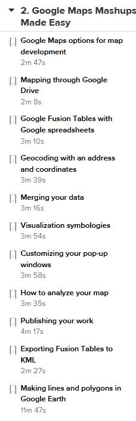
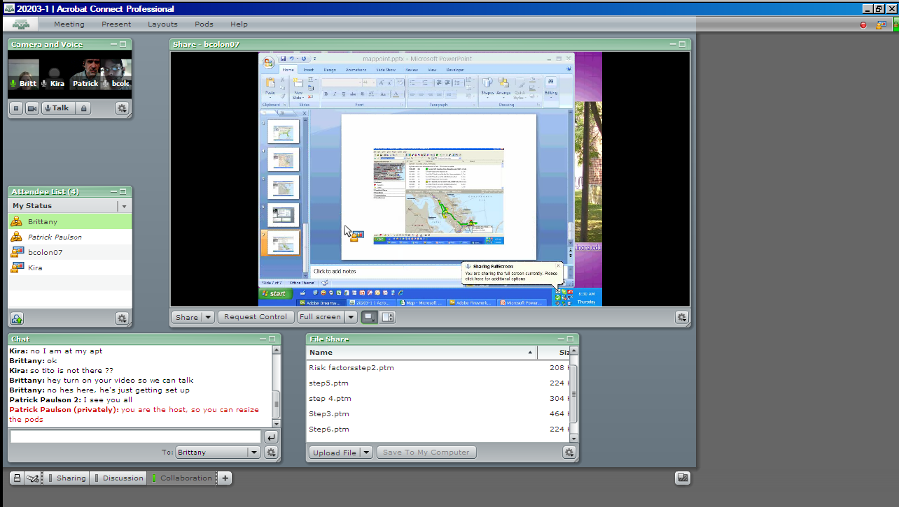

After completing this assignment you will be able to use various software applications to collaborate with others by:
The exercises in this assignment must be done in the order presented.
This assignment requires working with others in this course.
You are strongly advised to find seek out and meet with your group members the week before this assignment. Review these instructions and plan on how you will complete this assignment.
The purpose of this assignment is to learn how businesses and other entities can conduct business at a distance using web conferencing and other internet based tools.
The internet has provided tools to conduct business in ways not possible 10 years ago. Competitive advantage to a certain extent is based on how fast a business can execute a plan or strategy. The power of web based collaboration should not be overlooked. Becoming adept at collaborating with remotely located colleagues and clients will be expected by most businesses.Some items to consider are:
This assignment will explore ways to use web collaboration to simplify and expedite working at a distance. You are encouraged to explore on your own to find additional features that will make your life and present or future jobs easier.
Make sure that you have Google Earth Pro Desktop Edition installed-it was used in the last assignment. You will be using Google Drive, so make sure you can log into your account. Create a folder "MIS202Summative10" to save your work. Important: Before beginning this assignment you should first review the LinkedIn Learning tutorial from 'GIS on the Web'. Review Chapter 1 for background information. This assignment is based on Chapter 2-Google Maps Mashups Made Easy. This assignment highlights some of the problem solving skills and software tools you have learned in this course:
Completing the Project-Read all instructions before proceeding!
You will do all of Chapter 2 of the LinkedIn Learning video. Below is a list of particular items to save, make screen shots, or pdfs, or upload to the D2L Assignment folder.
Work with Google Drive to complete the first several sections as indicated below. 
Each student will do all of the steps. Log into D2L to find your Summative10 group and group members. Then refer to the Meeting Rooms page, and log into the Adobe Connect web conference room that corresponds to your group number. Group members will take turns sharing their screens and showing the group how to do a specific section. Pay close attention to the Lynda videos as you complete your work. The group decides which student begins the exercise. That student opens up a blank PowerPoint presentation and creates a title slide with a title of: Google Map Mashup, and a second slide listing the names of all group members who are present. Note the PowerPoint will be passed around to the different group members as they step through the exercise. Make sure you know how to upload and download from the File Share pod.

Each student will obtain a copy of the completed PowerPoint presentation. Choose an appropriate PowerPoint design.
Print the PowerPoint as a pdf
(25) 2. What was the most difficult aspect of this assignment?
(25) 3. What was the most enjoyable aspect of this assignment?
(25) 4. List 4 ways in which businesses can make effective use of collaboration tools.
(25) 5. Based on your experience with this assignment, list a 'collaboration-centric' issue that businesses and their employees will have to deal with? Briefly explain.
Use a web browser to verify that you have published your website to https://classes.winona.edu/... Check that your name, StarID, email, class, semester, section and all of your answers are correct and visible. From the menu choose File>Print... and using "Microsoft Print to PDF" save a copy of this assignment as a .pdf file in your ' ' folder.
(50) 6. Save your file 'WebPage.pdf' to the ' ' folder.
Use PDFill to merge the WebPage.pdf file with the WebConfPowerPoint.pdf file, and save it as 'Summative10.pdf' in ' ' folder.
(50) 7. Upload your file 'Summative10.pdf' to the D2L 'Summative10' Assignment folder.
Use a browser to view your completed and published website at: https://classes.winona.edu/... Ensure that you have linked this assignment on your home page. Note that your screen shots do not have to be completed to perform this step.